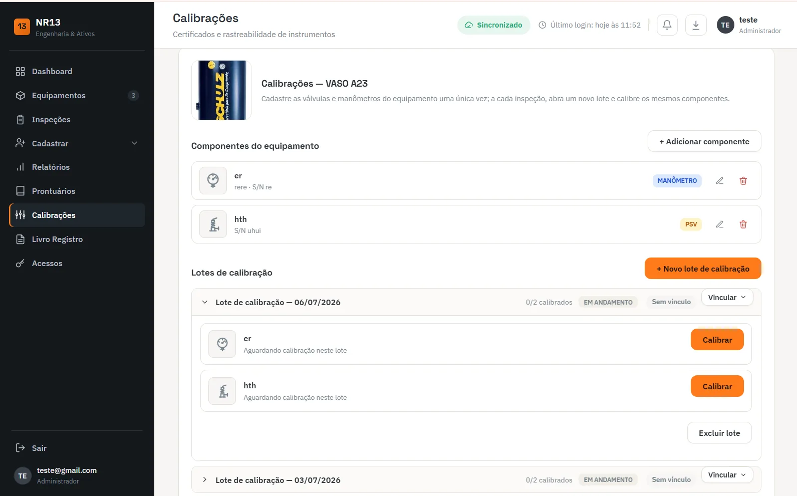
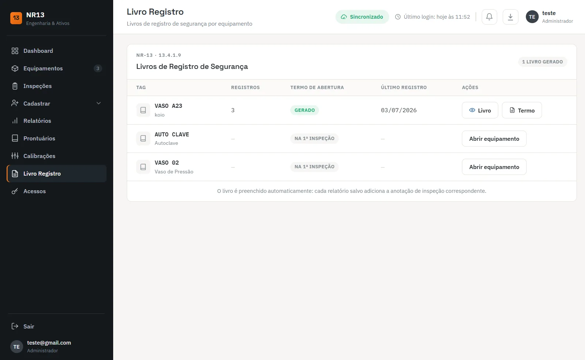

Este artigo é um diagnóstico da planilha: por que o controle de inspeção em Excel falha, como perceber isso antes de um vencimento estourar e o que fazer para sair dela com o histórico inteiro. Se você já decidiu trocar e quer comparar ferramentas, o critério de escolha está em como escolher um software de gestão NR-13; se quer entender o que um sistema de inspeção NR-13 precisa ter por dentro, o conteúdo está lá. Aqui o foco é a planilha que você já tem aberta.
Por que a planilha funciona no começo
Com cinco equipamentos, uma planilha resolve. Uma linha por caldeira ou vaso de pressão, colunas com tag, categoria, data da última inspeção e data da próxima, e uma formatação condicional pintando de vermelho o que está perto de vencer. Uma pessoa cuida, todo mundo sabe onde está o arquivo, e os relatórios cabem numa pasta da rede.
Isso não é amadorismo. Para um parque pequeno, estável, com um único responsável e um único estabelecimento, uma planilha bem montada é uma ferramenta adequada de controle de prazos — e é honesto dizer que muita empresa não precisa de mais do que isso. O que a NR-13 exige é que a documentação exista, esteja atualizada e à disposição: prontuário, registro de segurança, relatórios de inspeção, certificados dos dispositivos de segurança. A norma não exige software.
O ponto é que a planilha controla datas, não documentos. Enquanto o volume é pequeno, a pessoa responsável compensa essa diferença de cabeça: sabe onde está cada relatório, lembra que a PSV da caldeira foi trocada, sabe que o vaso da linha 2 teve o prazo reduzido pelo Profissional Habilitado. Quando o volume cresce, a memória dessa pessoa deixa de dar conta — e a planilha nunca soube dessas coisas.
Onde ela quebra: os sete pontos de falha
A passagem de "funciona" para "não funciona" raramente é um evento. É um acúmulo. Os pontos abaixo aparecem quase sempre juntos, e cada um piora os outros.
1. Versões paralelas circulando por e-mail
Alguém manda a planilha para o gerente, o gerente edita uma célula e devolve, o inspetor salva uma cópia no notebook para trabalhar em campo, o comprador abre uma versão antiga para cotar a calibração. Em pouco tempo existem três ou quatro arquivos com nomes como controle_NR13_final_v2_revisado, e ninguém sabe dizer qual é a fonte da verdade. A data certa de uma inspeção pode estar em uma cópia e errada em outra.
2. Nenhum alerta de vencimento de verdade
Formatação condicional só avisa quem abre o arquivo. Se a pessoa está de férias, afastada ou simplesmente não abriu a planilha naquele mês, o vermelho fica lá, sozinho. E cada equipamento tem mais de um prazo: exame externo, exame interno, calibração da válvula de segurança, calibração do manômetro. Multiplicado por trinta equipamentos, são mais de cem datas, cada uma com sua própria regra — a periodicidade de inspeção por categoria muda de um vaso para outro, e a caldeira segue regra própria.
3. Anexos fora da planilha
A célula diz "inspecionado em março". Mas onde está o relatório? O prontuário da caldeira está em uma pasta física na caldeiraria, o relatório do ano passado está no e-mail de quem saiu da empresa, o certificado da calibração da PSV ficou com o fornecedor e o da calibração do manômetro nunca chegou. Na hora da fiscalização ou de uma auditoria de seguro, a planilha mostra a data — e não mostra a prova.
4. Sem trilha de auditoria
Quem alterou a data da próxima inspeção do vaso V-104? Quando? Com base em qual relatório? A planilha comum não responde. Uma data pode ser adiantada por engano, ou "ajustada" para o equipamento sair do vermelho, e não fica registro. Para um controle que sustenta documentação de segurança, a ausência de histórico de alterações é uma fragilidade séria.
5. Fórmula quebrada sem ninguém perceber
Alguém insere uma linha no meio e a fórmula da próxima data não é copiada. Alguém cola um valor por cima de uma fórmula. Alguém muda a categoria de um vaso, mas a coluna de prazo estava digitada à mão e não acompanha. O arquivo continua abrindo normalmente, as cores continuam aparecendo, e o erro fica invisível até o dia em que um equipamento aparece vencido há meses.
6. Dependência de uma pessoa
Toda planilha que funciona tem um dono que sabe as exceções de cor. Quando essa pessoa sai, tira férias ou muda de função, o conhecimento sai junto: quais colunas são confiáveis, quais equipamentos têm prazo reduzido, onde estão os anexos. Quem assume herda um arquivo que parece completo e não é.
7. Vários inspetores, várias unidades, vários clientes
Para empresa de inspeção, o problema multiplica. Cada cliente tem seu parque, cada inspetor preenche de um jeito, e o cliente pede o relatório por WhatsApp no dia da fiscalização. Controlar isso em planilhas separadas por cliente é administrável até certo ponto; depois, o tempo gasto localizando e reenviando documento passa a competir com o tempo de inspeção. É o cenário em que um portal do cliente para empresa de inspeção deixa de ser luxo.

Sinais de que a planilha já passou do ponto
Se três ou mais itens abaixo descrevem a sua situação, a planilha deixou de ser uma ferramenta de controle e virou um risco:
- existe mais de uma cópia "oficial" e já houve discussão sobre qual está certa;
- um equipamento foi encontrado com inspeção ou calibração vencida sem que ninguém tenha sido avisado;
- para achar o relatório de uma inspeção é preciso procurar no e-mail de alguém;
- o controle de PSV e manômetro está em outra planilha, ou não está em lugar nenhum;
- só uma pessoa consegue responder "quando vence?" com segurança;
- já houve fórmula quebrada, coluna apagada ou data digitada errada descoberta tarde;
- o livro de registro de segurança não bate com as datas da planilha, ou é preenchido só quando alguém lembra;
- um equipamento novo entrou em operação e demorou para aparecer no controle;
- o cliente ou a auditoria pede um documento e a resposta leva dias, não minutos.
Nenhum desses sinais é, sozinho, uma irregularidade. Mas todos apontam para o mesmo lugar: em algum momento um prazo vai passar, e a descoberta vai acontecer na pior hora. Se o prontuário é o que está faltando, o caminho está em caldeira sem prontuário: o que fazer.
Se vai continuar na planilha, faça direito
Para parque pequeno, a resposta honesta pode ser manter a planilha. Nesse caso, algumas regras evitam a maior parte das falhas descritas acima:
- Um único arquivo, em local compartilhado com controle de versão (nuvem ou servidor), nunca anexado em e-mail.
- Uma linha por prazo, não por equipamento: exame externo, exame interno, PSV e manômetro em linhas próprias, cada uma com sua data e sua regra.
- Fórmulas protegidas: células de cálculo bloqueadas, edição só nas colunas de entrada.
- Categoria como dado de entrada, conferida contra a classificação do vaso de pressão, e prazo reduzido pelo PH registrado em coluna própria, com referência ao relatório.
- Link para o documento em cada linha: o caminho do relatório, do certificado, do prontuário. Se o link não existe, o documento não existe para fins de controle.
- Revisão mensal com data, feita por uma pessoa e conferida por outra.
Uma planilha assim continua sem alerta ativo e sem trilha de auditoria, mas é defensável para poucos equipamentos e um responsável bem definido.
O que migrar: inventário antes de trocar de ferramenta
O erro mais comum na migração é copiar a planilha para o sistema novo e considerar o trabalho feito. A planilha é só a ponta. O que precisa ir para o sistema é o conjunto que ela deveria controlar e não controlava:
- Cadastro do equipamento: tag, tipo, fabricante, número de série, ano de fabricação, PMTA, fluido, categoria, localização.
- Prontuário: dados de projeto, desenhos, código de construção, materiais, características funcionais.
- Histórico de inspeções: cada inspeção com data de realização, tipo de exame, parecer e o relatório de inspeção correspondente em PDF.
- Registro de segurança: termo de abertura e anotações existentes.
- Dispositivos de segurança: válvulas de segurança e manômetros com número de série, pressão de ajuste e certificados de calibração.
- Documentos de responsabilidade: ARTs, memórias de cálculo, laudos de reparo ou alteração.
- Pendências abertas: recomendações de relatórios anteriores ainda não cumpridas, com prazo.
Checklist de migração sem perder histórico
A ordem importa. Cada etapa depende da anterior, e pular a conferência final é o jeito mais rápido de levar para o sistema novo os mesmos erros da planilha.
- Congelar uma única versão oficial da planilha. Recolha as cópias que circulam por e-mail e pastas, eleja uma como oficial, salve-a como somente leitura com a data no nome e avise a equipe de que as outras deixam de valer.
- Sanear o cadastro de equipamentos. Confira tag, tipo, fabricante, número de série, PMTA, fluido e categoria de cada equipamento contra a placa de identificação e o prontuário. Elimine duplicados e equipamentos já desativados.
- Levantar os anexos que estão fora da planilha. Para cada equipamento, localize prontuário, relatórios de inspeção anteriores, registro de segurança, certificados de calibração de PSV e manômetro, memória de cálculo e ARTs. Anote o que falta.
- Padronizar nomes e formatos dos arquivos. Renomeie os arquivos com tag, tipo de documento e data, converta digitalizações para PDF legível e separe um diretório por equipamento antes de importar.
- Cadastrar equipamentos e importar o histórico. Cadastre cada equipamento no sistema e lance as inspeções passadas com as datas reais de realização, anexando o relatório correspondente, em vez de lançar apenas a última.
- Cadastrar dispositivos de segurança e calibrações. Vincule válvulas de segurança e manômetros ao equipamento em que estão instalados, com número de série e data do último certificado, para que o vencimento de cada um seja controlado separadamente.
- Conferir vencimentos contra a planilha antiga. Compare, equipamento por equipamento, a próxima data calculada pelo sistema com a da planilha. Toda divergência é investigada: ou a planilha tinha fórmula errada, ou o cadastro entrou incompleto.
- Aposentar a planilha sem apagá-la. Defina uma data de corte a partir da qual só o sistema vale, arquive a planilha congelada junto com o registro da migração e retire o acesso de edição.
A lista de documentos faltantes é um resultado, não um problema da migração. Quase toda migração revela relatório perdido, certificado que nunca chegou ou equipamento sem prontuário. Isso já era verdade na planilha — só não estava visível. Trate essa lista como plano de ação, com responsável e prazo, e não adie a migração até que ela esteja zerada.
Para estabelecimentos que pensam em estruturar um Serviço Próprio de Inspeção de Equipamentos, essa migração é pré-requisito prático: sem controle documental rastreável, o SPIE não se sustenta em auditoria.

Como o Sistema NR13 resolve o que a planilha não resolve
No Sistema NR13, cada ponto de falha da planilha tem um correspondente. Há uma única base, acessada pela web, em vez de cópias por e-mail. A próxima data é calculada a partir da categoria cadastrada e o alerta de vencimento sai por equipamento, sem depender de alguém abrir o arquivo. Prontuário, relatórios e certificados ficam anexados ao próprio equipamento. O registro de segurança é preenchido automaticamente: cada relatório salvo adiciona a anotação de inspeção correspondente.
As válvulas de segurança e os manômetros são cadastrados uma vez como componentes do equipamento, e cada nova inspeção abre um lote de calibração para os mesmos itens — o que elimina a planilha paralela de calibração. Em campo, o inspetor preenche o checklist pelo celular e o laudo NR-13 sai em PDF pronto para assinar. Para empresa de inspeção, o cliente acessa os próprios documentos pelo portal, sem pedir por WhatsApp.
Perguntas frequentes sobre planilha de inspeção NR-13
Planilha de Excel é aceita para controle de inspeção NR-13?
A NR-13 exige que a documentação do equipamento exista, esteja atualizada e disponível: prontuário, registro de segurança, projeto de instalação quando aplicável, relatórios de inspeção e certificados dos dispositivos. Ela não obriga o uso de software. A planilha é uma ferramenta de controle de prazos; o que o fiscal cobra são os documentos, e a planilha não substitui nenhum deles.
Com quantos equipamentos a planilha deixa de funcionar?
Não existe um número fixo. O que derruba a planilha é a combinação de quantidade de equipamentos, quantidade de datas por equipamento (exame externo, interno, PSV, manômetro), número de pessoas editando e número de clientes ou unidades. Um parque pequeno, com um responsável e uma única cópia, costuma funcionar bem; várias dezenas de equipamentos com mais de um editor raramente funcionam.
Dá para migrar para um sistema sem perder o histórico das inspeções?
Sim, desde que o histórico seja lançado como inspeções com as datas reais de realização e com o relatório correspondente anexado, e não apenas como a última data de vencimento. O ponto crítico é reunir antes os documentos que estão fora da planilha, em e-mails e pastas, e conferir os vencimentos calculados pelo sistema contra a planilha antiga.
A planilha pode substituir o livro de registro de segurança?
Não. O registro de segurança é um documento próprio do equipamento, com termo de abertura e anotações das inspeções e ocorrências, e precisa estar disponível no estabelecimento. Uma aba de planilha editável por qualquer pessoa, sem controle de quem alterou o quê, não cumpre esse papel.
Vale a pena manter planilha e sistema ao mesmo tempo?
Só durante a migração, como conferência. Depois da data de corte, manter as duas atualizadas cria exatamente o problema que se queria resolver: duas fontes da verdade que divergem. A planilha antiga deve ser arquivada congelada, sem acesso de edição.
Precisa disso resolvido por engenharia habilitada?
Organizar o controle resolve metade do problema; a outra metade é ter as inspeções em dia. A Axial Engenharia executa inspeção NR-13 com Profissional Habilitado e ART registrada, reconstitui prontuário e registro de segurança quando faltam, e atende presencialmente Vitória, Vila Velha, Serra, Cariacica, Viana, Guarapari e Fundão, com deslocamento programado para Anchieta, Aracruz e Linhares. Mande a sua planilha atual ou a foto da placa do equipamento pelo WhatsApp e o escopo volta no mesmo dia útil.